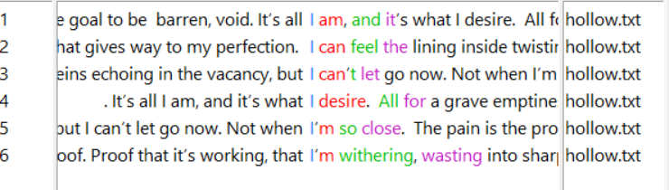

I’ve conducted more analyses on my own poetry. This time, I’m looking at N-grams (sequences of ‘N’ words/text). This is sometimes more helpful to look at than just individual words alone, as they can give a better understanding of the patterns of writing and commonly used phrases in a piece of text.
I looked at the whole of my poetry collection so far, as well as two individual poems (Host and Hollow, as they’re reminiscent and might be interesting to compare). My most used N-grams of interest are: “I can,” “can feel,” “the eyes,” “my body,” and “to burst.” Again, lots of focus on feeling, on personal experience and sensation, and those damned eyes!! Analyzing Hollow and Host didn’t give me much, as they’re not very long poems, but I did want to briefly touch on the concordance plots as they contrast (and reflect) one another.

The concordance for each on the word “I” are honestly strikingly similar. Lots of “I am,” “I can,” “I feel.”
But, the way it’s distributed throughout the poems is almost the complete opposite.


Host is about a parasite consuming the host whole, yet the “I”s are concentrated towards the end -- a reflection of the parasite and host getting lost within one another. Hollow is a poem focused on the internal thoughts of an anorexic, describing the feeling of hunger, where the frequency of “I” decreases as the work goes on -- the person behind the eating disorder fades and all that’s left is their obsession. I guess it’s just interesting to get a visual on the way these two seemingly analogous poems differ.
Beyond just comparing my work to itself, we also thought it’d be enlightening to see how my work relates to the poetry of other artists I admire (and I’m sure take unconscious inspiration from). One of my absolute favorite authors of all time is H. P. Lovecraft, so it seemed like a no-brainer to compare my stuff to some of his most famous poems (yes, he did poetry!)
Some note-worthy words that he used most were “strange,” “black,” “ancient,” and “dead.” Definitely fits with what I had expected from him. N-grams included “I knew,” “the vast,” “the night,” and “I saw.” Honestly, seeing that Lovecraft also relied heavily on a first-person perspective and had a N-gram list full of “I”s helped relieve the stress I had of my own work being too same-y and repetitive. Though, interestingly enough, sorting through the concordance with the the word “I” through the Lovecraft analysis, I see that most of his use is through action (I saw, heard, had, found, etc.) where as my usage tends to stray towards emotion (I feel/felt).